Section 6.2: The Binomial Distribution
Learning Objectives
1.Identify and interpret binomial random variables.
2.Use the binomial probability formula to compute probability in a binomial experiment.
3.Use technology to compute and interpret binomial probability.
The Binomial Random Variable
In section 6.1 we discussed discrete random variables and their probability distributions. In that section, we worked with probabilities that were given to us (like red or green lights on the way to school), or that we were able to derive using sample spaces (like flipping coins) or through empirical means (like looking at the number of 3-point shots Steph Curry makes). For some discrete random variables, there are theoretical formulas that allow us to find probability without using empirical methods or complicated analysis. The binomial random variable is one such example.
The binomial random variable is a count of successes in what are known as Bernoulli trials.
Definition 1
A Bernoulli trial is an experiment satisfying the following criteria:
1.There are a fixed number of trials, n.
2.There are two possible outcomes in each trial, called “success” and “failure”.
3.The probability of a successful outcome is the same for each trial.
4.The trials are independent.
If the discrete random variable X counts the number of successes in the n trials, then X is a binomial random variable. Bernoulli trials are often referred to as a binomial experiment.

Important Point!
The name binomial has prefix “bi” meaning “two”. One of the keys to recognizing binomial experiments is that there are two possible outcomes in each trial. But having two outcomes is not the only requirement! All 4 conditions for Bernoulli trials must be met. If any of them fails to be true, it is NOT a binomial experiment.
Example 1: Is the Discrete Random Variable Binomial?
Determine if the discrete random variable is binomial.
a)X is the number of “tails” in 10 coin flips.
b)X is the sum of the faces of two six-sided dice that are rolled.
c)X is number of twos that show up on 3 rolled six-sided dice.
d)X is the number of chocolate donuts out of 2 randomly selected donuts from a box containing 3 chocolate, 4 maple, 3 plain, and 2 sprinkled donuts.
e)X is the number of coin flips until you get “Tails” for the first time.
Solution:a)Since you count the number of times tails shows up in the 10 coin flips, X is a discrete random variable.
1.The coin is flipped 10 times, so there are a fixed number of trials, n = 10 coin flips.
2.Each coin flip has two possible outcomes, either “Heads” or “Tails”.
3.The probability of getting “Tails” is 0.5 and is the same for each coin flip.
4.Coin flips are independent of each other.
So, X = the number of “Tails” in 10 coin flips satisfies all four conditions and is a binomial random variable.
b)Here X is the sum of two rolled six-sided dice.
1.There does not appear to be a repeated experiment with a fixed number of trials. Two dice are rolled one time and the outcome is their sum. There are more than two possible outcomes.
There is no point in checking the remaining properties. If any of the properties are not true, the variable is not binomial. However, we could have also noted that there are more than two possible outcomes. The sum could be 2, 3, 4, ... 12. So, there are more than two outcomes for X. This is another reason X is not binomial.
Since there aren’t two outcomes in a fixed number of trials, this is NOT a binomial experiment.
c)Here X is the number of twos that show up on three six-sided dice. This is equivalent to rolling a single die three times and counting the number of times we get a two.
1.There are a fixed number of trials, n = 3 dice rolls.
2.Each roll has two possible outcomes, “get a two” or “do not get a two”.
3.The probability of getting a two is , and is the same for each roll.
4.Rolled dice are independent of each other.
So, X = the number of “Twos” in 3 rolled dice meets all four conditions and is binomial.
d)In this case we are randomly selecting two donuts, and X is the number that are chocolate.
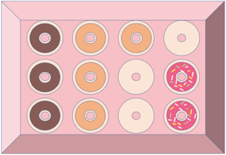
1.There are a fixed number of trials, n = 2 donuts selected.
2.There are two possible outcomes, either the donut is chocolate, or it is not.
3.The probability of getting a chocolate donut in the first trial is , but it is not for the second donut selected. The probability of chocolate in the second trial depends on the outcome of the first trial. It is if the first donut was chocolate or if the first donut was not chocolate. The probability of a chocolate donut is not constant because the outcomes are not independent.
4.The trials are dependent, not independent.
So, X = the number of chocolate donuts is not a binomial random variable.
e)The discrete random variable X is the number of coin flips it takes until you get “Tails” for the first time.
1.There are NOT a fixed number of trials, since it could happen that you get “Tails” on the first flip and stop. It could be that it takes 2, 3, 4, 5, or more coin flips until you get your first “Tails”. Since the number of trials is not a set number, this is not a binomial experiment.
We don’t have to check the other properties, but it is interesting to note that they are all satisfied.
2.There are two possible outcomes, either “Heads” or “Tails” in each flip.
3.The probability of getting “Tails” is 0.5 and is the same for each coin flip.
4.Coin flips are independent of each other.
Although this situation satisfies most of the conditions, it fails the first one, and therefore is NOT a binomial random variable. (It is called a geometric random variable if you are interested in looking it up!)
Definition 2
When a binomial experiment is conducted, we use the following notations.
n = The fixed number of trials.
X = The number of successes in the n trials.
p =The probability of success in any one trial. Since success and failure are complements, this means that 1 – p is the probability of failure in any one trial.
is the probability of obtaining exactly x successes in the n trials.
(Note that capital X stands for the random variable and lowercase x stands for a desired number of outcomes.)
Sometimes the words we use in statistics have a different meaning than they have in our everyday language. “Success” and “failure” in binomial experiments are an example. We use the terms “success” and “failure” to indicate whether the outcome we are counting is the result in a trial. But keep in mind that we may be counting something that is undesirable, like COVID-19 deaths. In this context, a death counts as a “success” in the formula, but it is clearly a bad outcome! So, remember that “success” means that “whatever we are counting happened”, not necessarily that it is good.
The Binomial Probability Formula
Next, we will derive the formula that we can use to find probability for binomial experiments. We will eventually use technology to calculate probability, but the next example will show you what is being calculated, and hopefully give you some appreciation for the technology we use.
Example 2: Binomial Probability
Assume that a student is going to take a four-question multiple-choice quiz. Unfortunately, the student’s browser is not working, and the student is unable to read the questions or options, so will randomly guess the answer to each question. Each multiple-choice question has 5 possible answers, a, b, c, d, or e. Explain why this is a binomial experiment and make a probability distribution for X = the number of questions the student correctly answers.
Solution:In this situation, we let X = the number of questions the student answers correctly.
1.There are a fixed number of trials, n = 4 multiple-choice questions.
2.Each question has two possible outcomes, either “guess right” or “guess wrong”.
3.There are 5 possible answers for each question, so the probability of guessing correctly is the same for all questions,
4.The guesses are independent because they are random.
So, X = “the number of correct answers guessed” meets all four conditions and is a binomial random variable.
Next, we will use a tree diagram to help us visualize the possible outcomes for the student. See figure 6.10. Each question guessed is either correct, noted with or incorrect, noted with .
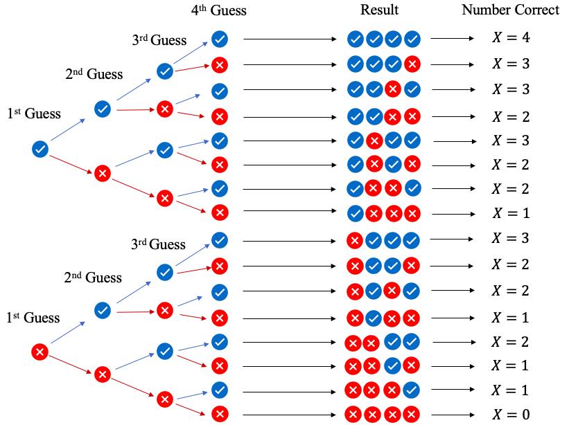
Figure 6.10: Tree diagram for 4 multiple-choice guesses.
There are 16 possible outcomes for guessed answers, shown as sequences under “Result” in figure 6.10. There is 1 result where X = 0 answers are correct, 4 different ways where X = 1 question is answered correctly, 6 ways to guess X = 2 correct answers, 4 ways to guess X = 3 correct answers, and 1 way to guess all four answers correctly so that X = 4. Unfortunately, this is not a sample space because all the outcomes are not equally likely. Why?
The probability of guessing correctly on any one question is , and the probability of guessing incorrectly is .
The probability of “guessing all 4 questions correctly” is something we could have found in section 5.3 using the multiplication rule.
Similarly, we could have found the probability of “guessing all four questions incorrectly,” and we see that the probability of all four wrong has a much higher probability.
Since the probabilities for the outcomes are different, the outcomes are not equally likely, so we do not have a sample space. But because the guesses are independent, we can use the multiplication rule to find the probability for each of the results!
For example, the probability of the result or “Wrong, Right, Right, Wrong,” (noted as WRRW) is
Figure 6.11 shows the probability calculation for each possible sequence of guesses.
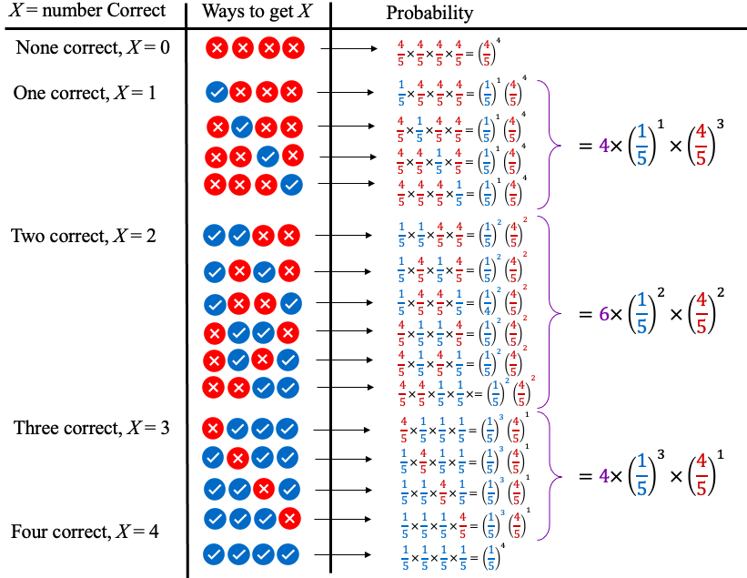
Figure 6.11: Probability for all outcomes of 4 multiple-choice guesses.
Finally, we can write out the probability distribution, shown in Table 10.
Table 10: The Number of Correct Guesses | |
|---|---|
X = Number Correct | Probability |
0 |
|
1 |
|
2 |
|
3 |
|
4 |
|
If you look carefully, you will see a pattern! In simplest form, it is
In the example, if we wanted to calculate the probability of X = 2 (the probability of guessing two questions correct), we use the probability of guessing correctly , and raise it to the 2nd power because there are 2 questions that are correct. To get the probability of guessing the other two questions wrong, take , and raise it to the second power because there are two questions that are wrong. The formula would look like this:
The only remaining difficulty is figuring out the “Number of ways to get X = 2 successes”. For this example, we could count the number of possibilities listed in the tree diagram we created above. However, creating tree diagrams can be very time consuming. Instead, we will develop a formula based on the number of total trials and the desired number of successes (and failures).
Definition 3
For positive integers n “n factorial” is , the product of all positive integers less than or equal to n.
We define .
The number of ways to choose x successes out of n trials is called a combination. It is denoted where
So, in the example we had n = 4 questions, and we wanted to choose x = 2 to be right, and 2 to be wrong. The number of ways to get 2 out of 4 right is
If you check figure 6.11 and Table 10, you will see there were indeed 6 ways to get two out of four questions correct. If we include this with the pattern we noticed earlier, we have a formula that will allow us to skip making tree diagrams for binomial experiments! Of course, if you wanted to see the what the 6 different ways are, you would still need to create one. But if your goal is to find the probability, we now have a shortcut binomial probability formula.
The Binomial Probability Formula
Assume that a binomial experiment is conducted with the following conditions:
n = the fixed number of trials
p = the probability of a success in one trial, so 1 – p is the probability of failure in one trial
x = the specific number of successes counted in the n trials
Then the probability of getting exactly x successes in n trials is given by
Most of the time, we will use technology to compute binomial probability, but now you know what is being calculated.
Okay, so that was a lot of theory. We will show one example where we use the formula, then move on to using technology to find probability for binomial random variables.
Example 3: Binomial Probability
At the time of this writing, approximately 70% of the world population has been (at least partially) vaccinated against COVID-19. Assume that 10 people from around the world are randomly selected. Let X = the number who are (at least partially) vaccinated.
a)Why is this a binomial experiment?
b)Find the probability that exactly 8 of the 10 people are vaccinated.
c)Find the probability that at least 8 of the 10 people are vaccinated.
d)Find the probability that fewer than 8 of the 10 people are vaccinated.
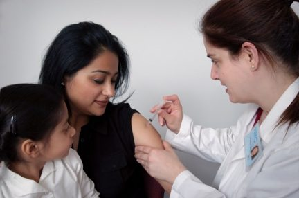
Photo by CDC (opens in a new tab) on Unsplash (opens in a new tab)
Solution:a)In this situation, we let X = the number of people out of 10 who are vaccinated. Here, a randomly selected individual who is vaccinated counts as a success because that is what we are counting. In this context, being unvaccinated counts as a failure.
1.There are a fixed number of trials, n = 10 people who are randomly selected.
2.There are two possible outcomes, each randomly selected person is either vaccinated or unvaccinated.
3.There is a 70% chance that any randomly selected person has been vaccinated, which is the same for each randomly selected person.
4.The randomly selected individuals are assumed to be independent because the sample of 10 individuals is far less than 5% of the world population.
So, X = the number of vaccinated individuals out of 10 randomly selected is a binomial random variable.
b)To find the probability that there are 8 vaccinated individuals among the 10 randomly selected, we note that the probability of a success is , and the probability of a failure is . We want to count successes out of trials, so there will be 2 failures. So, the binomial probability formula gives us
First, we compute the number of ways to have 8 vaccinated individuals out of 10 randomly selected people.
So, the probability that 8 randomly selected people are vaccinated is
c)To find the probability that there are at least 8 vaccinated individuals among the 10 randomly selected, we need to find . We calculated in part (b). So, we need to find and , then add the three together.
First, the number of ways to have 9 and 10 successes are
And
Then,
And
Adding we get
There is a 38.28% chance that at least 8 out of 10 randomly selected individuals have been vaccinated against COVID-19.
d)To find the probability that there are fewer than 8 vaccinated individuals among the 10 randomly selected, we need to find . We could calculate each of those probabilities separately, then add them together, but since we know the probability that at least 8 will be vaccinated is 0.3828, the probability that fewer than 8 will be vaccinated is the complement.
So, there is a 61.72% chance that fewer than 8 individuals out of a group of 10 randomly selected people will be vaccinated.
Binomial Probability Using Technology
The last example shows the power of the binomial probability formula. Had we tried to make a tree diagram with 10 randomly selected individuals, it would have required 1024 branches! That would have taken a lot of time! But even the formula can require a great deal of effort when we find probability for inequalities like we did in part (c). Since this book is being written for use with technology, let’s use it! But make sure you understand what the technology is computing for you!
STATBELT Utility- Binomial Probability Distributions
To use STATBELT Utility to find probability for a binomial random variable X:
1.Select Calculators → Binomial Calculator.
2.Type the number of trials n and the probability of success p.
3.Under “Find,” choose the inequality that you need, and type the value of x.
•Choose P(X = x), P(X ≤ x), P(X < x), P(X ≥ x), or P(X > x) for one value of x.
•Choose P(a ≤ X ≤ b) for a probability between two values a and b. The inequalities cannot be changed for this option.
4.The probability, the mean, the standard deviation, and a probability histogram appear as soon as you type. There is no button to click.
The Binomial Calculator shades the bars of the probability histogram for the probability you choose, and you can find other probabilities by changing the numbers and inequalities.
If you are using a calculator to find binomial probability, it is written as a function such as binompdf(-,-,-) on Texas Instruments calculators, Binomialdist in Desmos, or something similar in other calculators or apps. Of course, you can use STATBELT!
Example 4: Binomial Probability with STATBELT!
At the time of this writing, approximately 70% of the world population has been (at least partially) vaccinated against COVID-19. Assume that 10 people from around the world are randomly selected. Let X = the number who are (at least partially) vaccinated. Use STATBELT to find each probability.
a)Find the probability that exactly 8 of the 10 people are vaccinated.
b)Find the probability that at least 8 of the 10 people are vaccinated.
c)Find the probability that fewer than 8 of the 10 people are vaccinated.
Solution:Open STATBELT Utility and select Calculators → Binomial Calculator. The following calculator will appear.
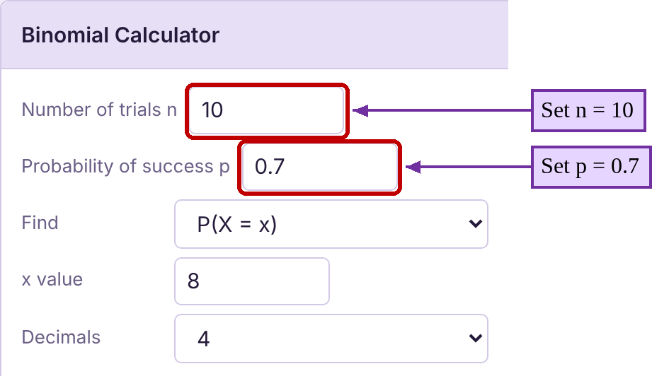
Since there are 10 randomly selected individuals, set n equal to 10 (it already is by default). Then set the probability of success to .
a)To find the probability that 8 people have been vaccinated, choose P(X = x) under “Find” and type 8 for the x value. Rounded to 4 decimal places, we get , the same as we found in part (b) of example 3.
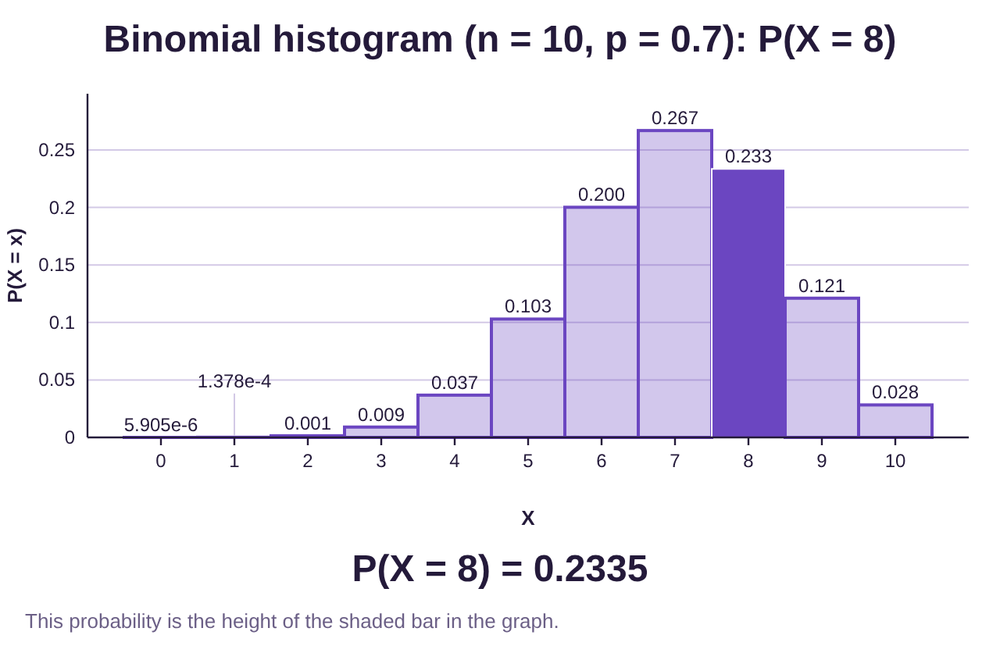
b)To find the probability that X is at least 8, we find by choosing P(X ≥ x) under “Find” (the inequality “”). The result is , rounded to 4 decimal places. This is the same result as we found in part (c) of example 3.
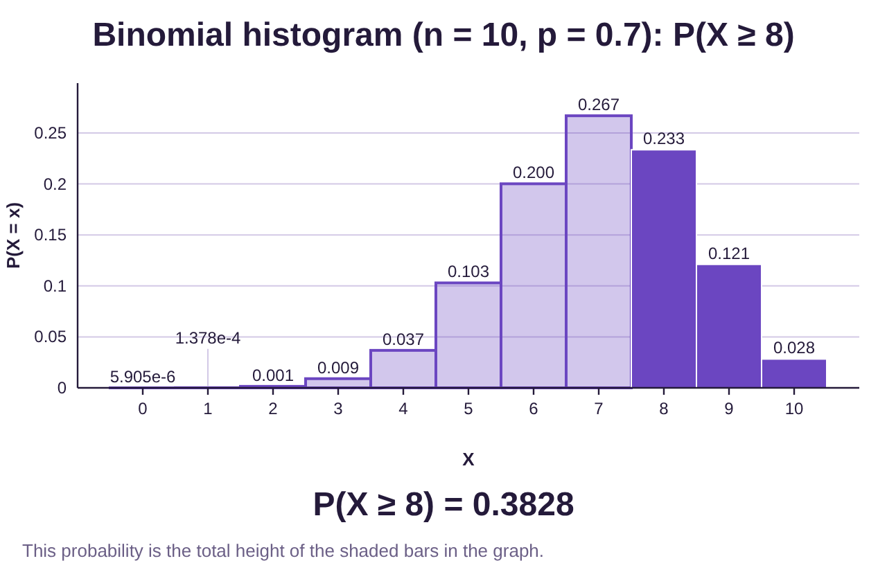
c)To find the probability that X is fewer than 8, change “Find” to P(X < x). The result is . Again, this agrees with the result we found in example 3.
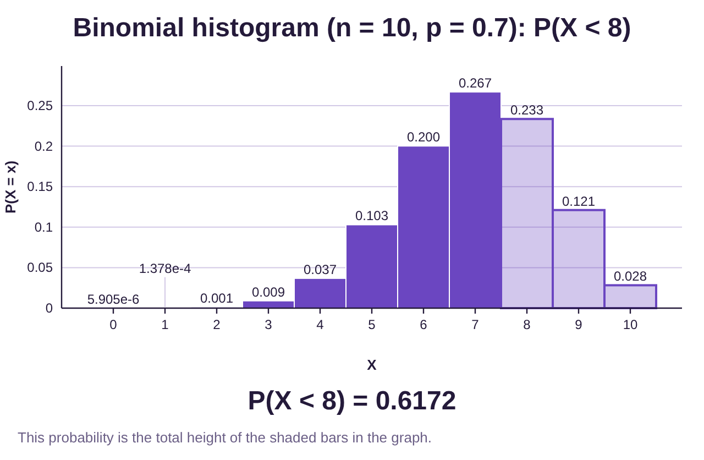
Example 5: Binomial Probability with STATBELT!
According to the National Center for Health Statistics, 62.5% of U.S. households are wireless-only for voice service (meaning they do not have landline phones). Assume that 25 U.S. households are randomly selected and let X = the number who are wireless-only for voice service.
a)Why is this a binomial experiment?
b)Find the probability that 18 or more of the households are wireless-only.
c)Find the probability that at most 15 of the households are wireless-only.
d)Find the probability that between 14 and 18 households, exclusive, are wireless only.
e)What is the likelihood that between 15 and 20 households, inclusive, are wireless only?
f)Would it be unusual if 20 or more households were wireless-only?
Solution:a)In this situation, we let X = the number of households out of 25 who have wireless-only service. Here, a success is a household that is wireless-only.
Photo by Jannis Lucas (opens in a new tab) on Unsplash (opens in a new tab)
Photo by Quino Al (opens in a new tab) on Unsplash (opens in a new tab)
1.There are a fixed number of trials, n = 25 U.S. households that are randomly selected.
2.There are two possible outcomes, each randomly selected household is “wireless-only” or “not wireless-only”.
3.There is a 62.5% chance that any randomly selected household is wireless-only, which is the same for each randomly selected household.
4.The randomly selected households can be assumed to be independent because the sample of 25 is less than 5% of the total number of U.S. households.
So, X = the number of U.S. households that are wireless-only is a binomial random variable.
b)To find the probability that there are 18 or more wireless-only households, select Calculators → Binomial Calculator, then type n = 25 and p = 0.625.
Under “Find,” choose P(X ≥ x) (the inequality “”) and type 18 for the x value. The result is
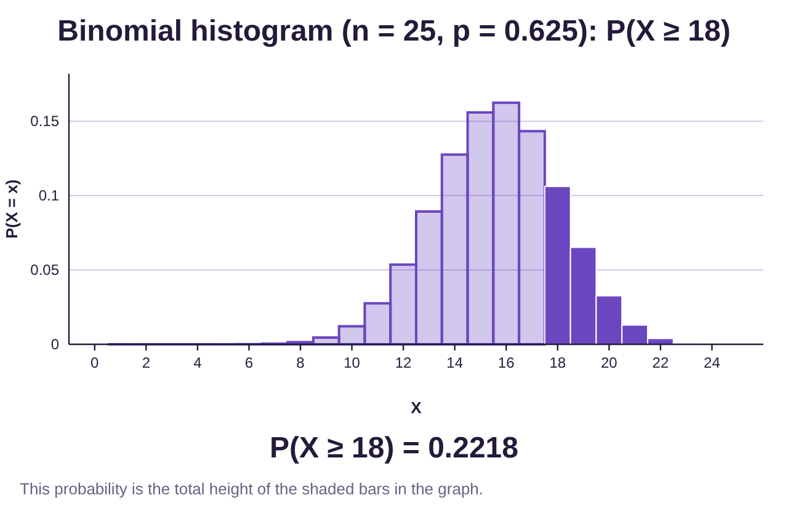
c)“At most 15” means that To find the probability that at most 15 of the households are wireless-only, choose P(X ≤ x) (the inequality “”) and type 15 for the x value. The result is
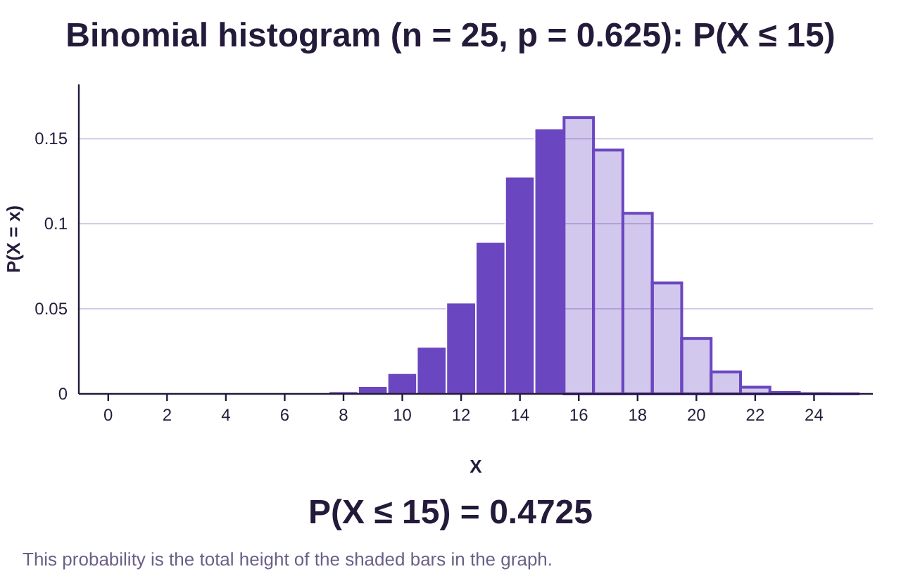
d)To calculate a “between” probability, choose P(a ≤ X ≤ b) under “Find.” “Between 14 and 18, exclusive,” means that We do not include 14 or 18. But the between feature of the calculator requires us to put our inequality into the form . If X is between 14 and 18, but not including 14 or 18, then Typing 15 for a and 17 for b gives us
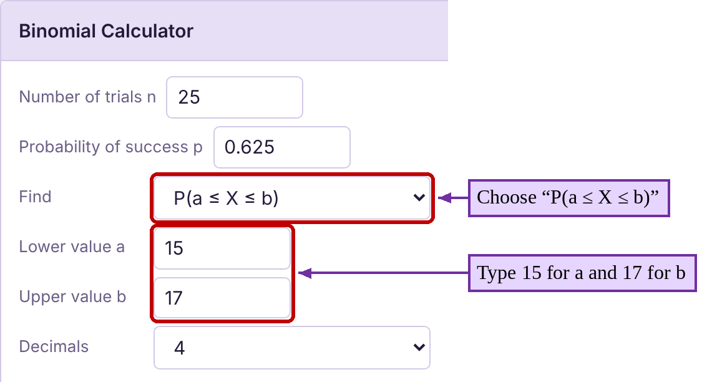
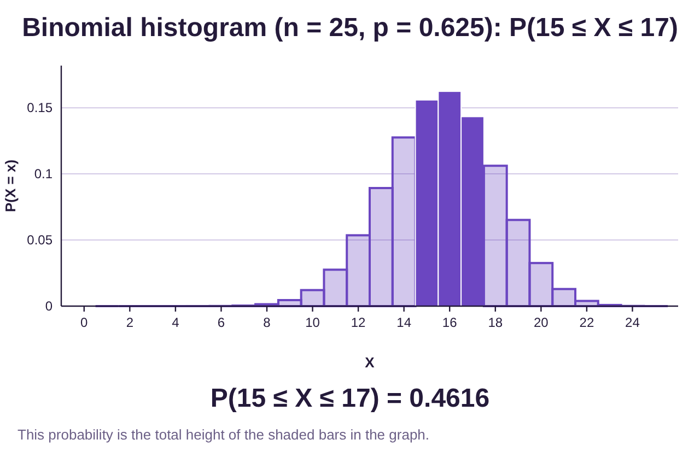
e)To calculate the probability that X is “between” 15 and 20 inclusively, we include both 15 and 20. Type 15 for a and 20 for b:
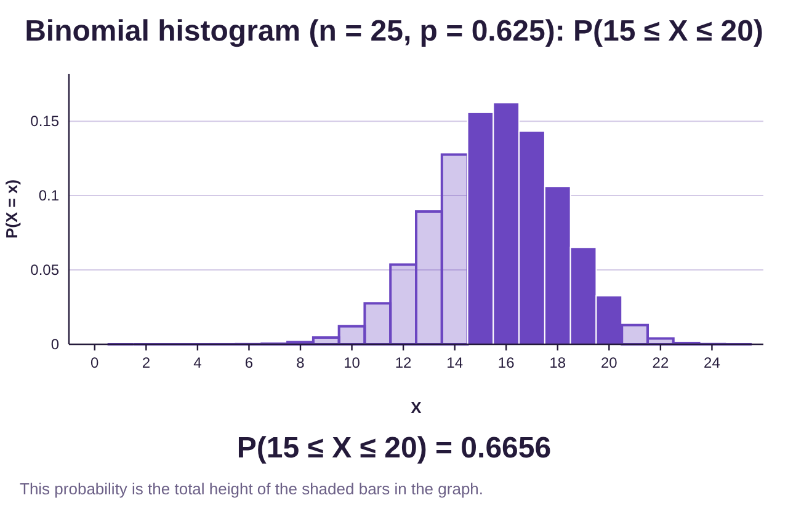
f)Would it be unusual if there were 20 or more households out of 25 that were wireless-only? To answer, we calculate the probability that X is 20 or more. Choosing P(X ≥ x) under “Find” again (the inequality “”) and typing 20 for the x value, we get Since 0.0504 is not less than 0.05, this would not be unusual (although it is very close!)
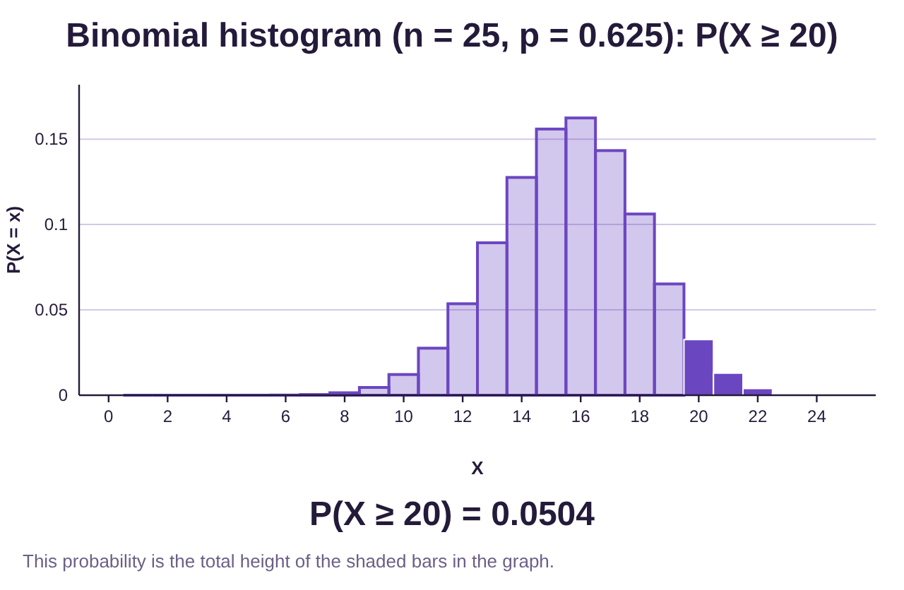
Example 6: Binomial Probability with STATBELT!
Blissco Family Fun Products (not a real company) is a large company that has been accused of racial discrimination in its hiring practice. An advocacy group has learned that of the last 48 people hired, only 7 are persons of color. Further, the advocacy group has studied the applicants and noted that 32% were persons of color who were at least as well qualified as the white applicants. Assuming the probability that a person of color is hired is , what is the probability that the company would hire no more than 7 persons of color out of 48 hires? Would this be considered unusual? What does this tell us about Blissco Family Fun Products?
Photo by Eric Prouzet (opens in a new tab) on Unsplash (opens in a new tab)
Solution:To assess the discrimination issue, we will treat hiring as a binomial experiment with n = 48 trials. We will count each trial as a success if a person of color is hired, and otherwise as a failure. As stated in the description, 32% of the applicants were qualified non-white candidates, so we will use . Using the Binomial Calculator in STATBELT, we calculate the probability of hiring 7 or fewer persons of color to be .
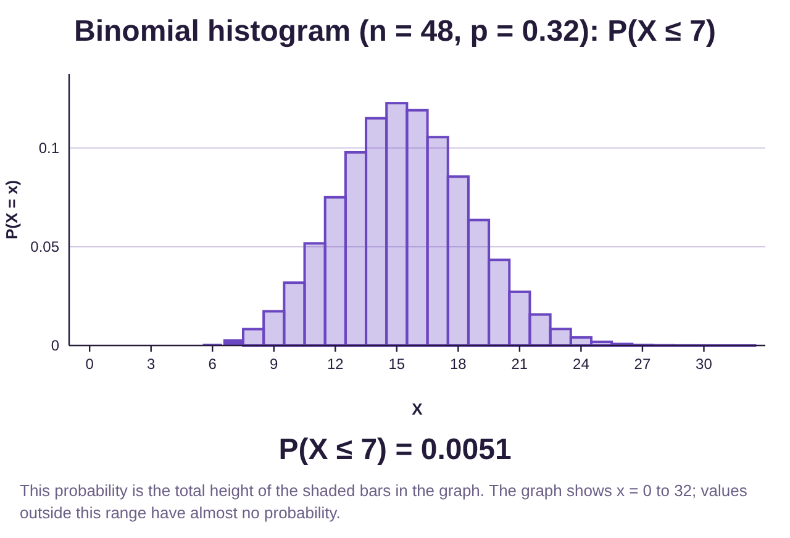
Since the probability of hiring 7 or fewer persons of color is less than a 5% chance, we conclude that the hiring practices at Blissco are unusual. In fact, if Blissco is not discriminating against persons of color, this hiring pattern would only occur randomly about 0.5% of the time. It seems far more likely that Blissco is discriminating in its hiring based on race.
Example 6 is our first use of inference. Recall that inference is the final step in the process we call statistics. To use inference, we make an assumption and calculate the probability the results would occur if the assumption were true. If the results are highly unusual, that is evidence that the assumption is not correct. In this case, we assumed that Blissco was not discriminating in its hiring. We calculated the probability that 7 or fewer persons of color would be hired if discrimination were not present. Then, because the probability was very low, we decided the assumption was probably not correct. Blissco was likely discriminating based on race.
Statistically, there is about a 0.51% chance that this hiring pattern would result from a non-discriminatory hiring practice. So, either Blissco is not discriminating, and a very rare event happened (0.51% chance) or Blissco is discriminating based on race. Is it possible they are not discriminating? Yes. Rare events sometimes happen. Is it likely they are not discriminating? No, the statistics are strong evidence that the company has discriminatory hiring practices.